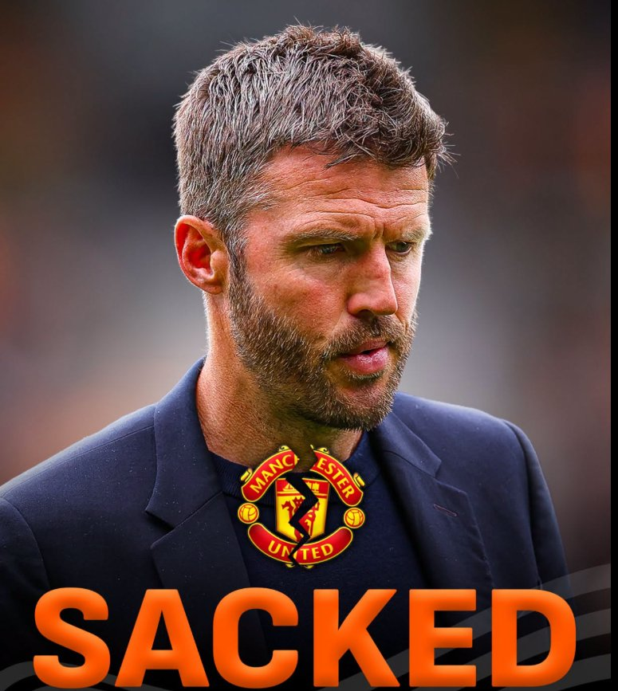

Carrick Sacked: Manchester United Faces Another Rebuild as Questions Mount Over Club's Future
Sports
Michael Carrick's departure from Manchester United marks another turning point in the club's turbulent rebuilding process, raising fresh questions about its leadership, recruitment strategy and long-term ambitions.
Carrick's dismissal follows a disappointing start to the 2026/27 campaign that left United struggling in the Premier League relegation zone. The decision is particularly significant given that he guided the club to a third-place finish last season and secured Champions League qualification during his interim spell. However, inconsistent performances, defensive weaknesses and a disappointing run of results ultimately put his position under pressure.
His departure highlights a recurring problem at Old Trafford: the club's inability to turn periods of progress into sustained success. United have invested heavily in players and repeatedly changed managers, yet establishing a consistent identity on the pitch remains a challenge.
Attention will now turn to finding a successor capable of restoring confidence and providing a clear footballing direction. Mauricio Pochettino has emerged as a leading candidate, although the next manager will inherit a squad requiring improvements in defensive organisation, consistency and overall performance.
Beyond the managerial position, Carrick's exit is likely to reignite debate about the club's ownership and sporting leadership. Supporters have increasingly questioned whether changing managers is enough to address deeper problems involving recruitment, decision-making and long-term planning.
Ultimately, Carrick's sacking is about more than one manager losing his job. It exposes Manchester United's continuing struggle to establish stability. The next appointment must deliver results while building a sustainable project capable of restoring the club's competitiveness. Without a clear long-term strategy, another managerial change could simply repeat a cycle that has frustrated supporters for years.